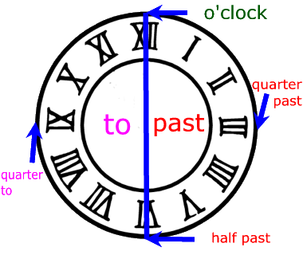

What are the days of the week? The days of the week are Monday, Tuesday, Wednesday, Thursday, Friday, Saturday and Sunday. Watch the video to learn about the days of the week.
The English language has retained the planet names for Saturday, Sunday, and Monday. However, the names for the other days of the week have been replaced by their equivalent Norse or Germanic gods. Some Asiatic languages such as Hindi,
Japanese, and Korean have a similar relationship between the weekdays and the planets.
There are many different opinions as to how the 7-day week originated. The most common explanation points to Babylonian astrologers who assigned planet gods to the days of the week around 700 BCE.
The Romans later replaced these names with their planet gods in the ancient Roman calendar and Germanic and Norse people later did the same with some of their gods.
Which preposition to use before days months and seasons? Use “on” before the days Examples: on Monday, on Tuesday, on Wednesday, on Thursday, on Friday, on Saturday Use “in” before the months Examples: in May, in January, in August, in
July, in December Use “in” before the seasons Examples: in spring, in summer, in autumn, in winter Use “on” before the dates Examples: on 25 March 2015, on 2 June 2019 Other usages of “in” in the morning in the afternoon in the evening
Other usages of “at” at noon at night at midnight
Example sentences about days, months and seasons Today is Tuesday. January is the first month of the year. Monday is the first day of the week. I was born on the 5th March. There are seven days in a week. I like summer more than the other
seasons. Spring is my favourite season. In summer the days are usually hot in Egypt. I go out with my friends on Sundays. The world will be a better place in the year 2030. I get up very early on weekdays. Winters are very cold in
Russia. Luca went skiing in January last winter. They like going on a picnic in summer, especially in June. I celebrate my birthday in autumn on September 23th. I hope to see you next April.
Reading passage I am a businessman. I am busy all the time. I must organize my life. I work very hard on weekdays. On Mondays I get up early and check my weekly plan. I attend the meetings. On Tuesday and Wednesday I go out for my customers.
On Thursday and Friday I try to find new customers. At the weekend I am not that much busy. I spare time for my family on Saturday and Sunday. We go to the cinema in autumn and winter. However we go on a picnic in spring and summer.
We also spend two weeks at a seaside resort in July.

The Time
THE TIME AND BASIC WORDS
The Time in English:
The 12-hour-system in English In English there is no 24-hour-system (sometimes it is used on TV and in timetables). 15:00 is 3 o'clock (p.m.) (on TV: fifteenhundred). That's why you use a.m. (Latin: ante meridiem) and p.m. (post meridiem) in situations
where it is necessary to point out that you want to say in the morning or in the evening. In other situations (or when it is clear that school starts in the morning and the party in the evening) it is left out.
When to use o'clock o'clock (abbreviation: of the clock) only on the hour.
Many students might be used to a 24-hour clock in their native culture. To begin telling time, it's a good idea to just go through the hours and make students aware of the fact that we use a twelve-hour clock in English. Write the numbers
1 - 24 on the board and the equivalent time in English, i.e. 1 - 12, 1 - 12. It is also best to leave out. 'a.m.' and 'p.m.' at this point.
Climates are the result of the unequal heating and cooling of the Earth. Circulation of the atmosphere moves a lot of thermal energy around the globe. Circulation of water in the ocean (ocean currents) can also influence regional climates.